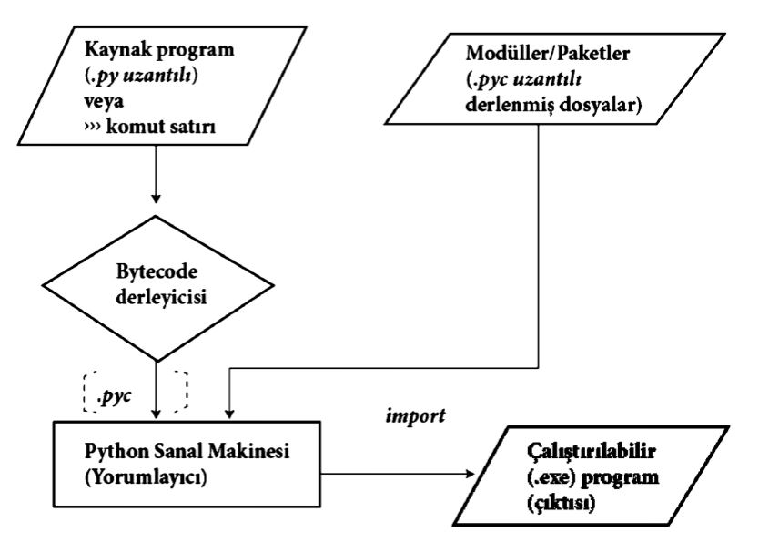

Age=int(input("Age= "))
Name=input("Name= ")
if (Age<=18):
print("You are in the if block!!")
print("You are in the if block!!")
print("You are not in the if block!!")Python
This is HTML version of the lecture notes. If you’d like to run the sample Python codes please visit this LINK and open file
fef1002-python.ipynb
What is Python?
- Python is a programming language that was first developed by Guido Van Rossum in Amsterdam in the early 1990s.
- Python is an object-oriented, interpreted, and high-level programming language that stands out in software development and data analysis.
- Its standard library, development tools, and many other libraries can be downloaded for free as open source code.
- Due to its advanced libraries for data science, data analysis, and artificial intelligence, it is one of the most used programming languages by people who want to advance in these fields.
- It has many development environments such as Jupyter, PyCharm, and Spyder.
How Python Works

The bytecode compiler takes source code (Python commands) as input. It then produces Python bytecode (.pyc file) that can be read by the machine as output.
The virtual machine takes Python bytecode (.pyc) and any relevant library modules as input, executes the virtual machine instructions represented by the bytecode, converting it into executable file format.
In Python, the import statement is used to add/import a library module to the current source file.
Installing and Using Jupyter Notebook through Anaconda
What is Anaconda?
Anaconda is a popular open-source distribution for data science and machine learning projects. Anaconda makes it easy to process, analyze and visualize data using Python and R programming languages. It contains many packages and tools and also simplifies managing virtual environments. Anaconda Navigator allows users to manage these packages and tools through a graphical interface.
- Downloading Anaconda:
- Open a web browser and go to the Anaconda Download Page
- Download the appropriate version of Anaconda for your operating system (Windows, macOS, or Linux)
- Installing Anaconda:
- Run the downloaded Anaconda installation file
- Follow the necessary steps using default settings during installation
- Opening Anaconda Navigator:
- After installation is complete, open Anaconda Navigator (You can access it from the Start Menu in Windows or Applications folder in macOS)
- Starting Jupyter Notebook:
- Once Anaconda Navigator opens, find the “Jupyter Notebook” card on the main screen
- Click the “Launch” button. This will start Jupyter Notebook in your default web browser
- Creating a New Notebook:
- When Jupyter Notebook opens, it will open in your file system’s root directory by default
- Click the “New” button in the top right corner and select “Python 3” from the dropdown menu. This creates a new Python 3 Notebook
- Using Notebook Cells:
- You can use cells to write code in the newly created Notebook
- Press
Shift + Enterto run a cell after writing code
Python Basics
Some Jupyter Notebook shortcuts are given in the table below:
| Shortcuts | Action |
|---|---|
| a | Adds a cell above |
| b | Adds a cell below |
| dd | Deletes the cell |
| enter | Enters cell editing mode |
| shift + enter | Runs the cell |
| esc | Makes cell inactive |
| y | Converts to code snippet |
| m | Converts to markdown snippet |
| shift + j | Select current and next cell |
| shift + m | Merge selected cells |
| shift + minus | Split cell |
Python Block Structure
In Python (and other programming languages), codes are expressed in certain subsets (blocks). This structure is created with indentation in Python. In Python, codes that are vertically aligned are in the same block structure. It is recommended to use a tab (4 spaces) to easily distinguish code blocks. If an IDE (integrated development environment) is used, these indentations will be set automatically. Loops, functions, and conditional statements are created using code blocks.
In the program above, a block was created by creating an indent under the if statement. The result of the logical expression “age>=18” causes all codes in the block to be skipped or executed. When writing code in Python, attention must be paid to indentation. Since indentation determines the block structure, it can cause the program to run incorrectly or not run at all.
Variables
- When writing code, it may be necessary to get data from users or other sources. For example, if we want to find the sum of two numbers, we need to get two numbers as input from the user. These inputs (values) must be stored in memory to perform operations. A certain space must be allocated in memory to store these inputs. When a variable is defined, the interpreter allocates space in memory depending on the data type and determines what type of data can be stored in the allocated section.
- Variables represent this space allocated in memory for a string, number, or different type of data. Values of different data types can be assigned to variables. Integer, decimal number, array, or string type values can be stored in variables through value assignment.
- The same variable can take values of different data types. A number can be assigned to the same variable first, then a text, then a value of another type. When a value is assigned to a variable, the data type is automatically defined.
- Python will give an error if an unassigned and/or undefined variable is used, if variables are not used according to their data types.
- There is no need to explicitly declare variables’ data types. The same variable can take values of different data types. A number can be assigned to the same variable first, then a text, then a value of another type. When a value is assigned to a variable, the data type is automatically defined.
- Variables can be assigned side by side with commas between them. Their values should also be written in the same order.
- Another method to assign values to variables is to write variable-value pairs with semicolons “;” between them.
#number1 is 5 now
number1=5
print('The variable contains: ', number1)
number1=10
print('Current value of variable is: ', number1)
number1='Murat'
print ('Current value of variable is: ', number1)
number1=10.5
print ('Current value of variable is: ', number1)name, lastname,age='Ali', 'CAN', 34
print("First Name= ", name)
print("Laste Name= ", lastname,)
print("Age= ", age)s1=3; s2=5;t=s1+s2
print("1.Number=", s1)
print("2.Number=", s2)
print("Total=", t)Variable Naming Rules
- Case sensitivity exists
- Reserved words like “False, True, None, continue, break, class, and, as, else, elif” cannot be used as variables
- The first character of variables must be alphabetic or
_. The rest can only continue with alphabetic, alphanumeric, or again_. Other characters cannot be used - Variable names can be any length
- Turkish characters (ç, ğ, ı, ö, ş, and ü) are allowed in variable naming. However, since some versions don’t allow this, it should be avoided
number1=1
Number1=2
print(number1)
print(Number1)
"""number1 with capital N is differenet variable than all small letter"""Python Functions
- print():
A function used to show the results of operations to the user, print certain messages to the screen, and print certain information with a specific format.
format() method: A method used in the print() command for formatting operations such as alignment and printing to desired locations on the screen when outputting values.
print("{} likes {}!".format("John", "soccer"))
print("{} is a {} at age of {}.".format("Jane", "girl", "8"))- input():
A function used to get input from the keyboard. In Python, the input() function has a more functional structure than in other programming languages. With the input() function, information can be given to the user about the data to be entered without needing the print() function.
a=input("Provide a number: ")
b=input("Provide another number: ")
print("Total of two numbers: ",a+b)
c=int(a) #c=int(input("c= "))
d=int(b) #d=int(input("d= "))
print("Total of two numbers: ",c+d)- Standard Mathematical Functions
The math.py file contains functions in the standard mathematics module. Access to the entire math module is provided using the import math expression. However, when calling the relevant function, the module name must also be specified. Module names must be used by joining them with . to function names. This structure is called a combined (module name. function name) structure.
| Function Name | Description | Example Usage and Output |
|---|---|---|
| sqrt() | Finds the square root of the desired value. | math.sqrt(16) -> 4 |
| exp() | Raises e (Euler’s constant) to the desired power. | math.exp(2) -> 7.389056 |
| log() | Our log(x,y) function takes two parameters. First parameter x represents the number whose logarithm is to be taken; second parameter y represents the base number. |
math.log(2,2) -> 1.0 |
| log10() | The only difference from log(x,y) function is that the base is fixed as 10. |
math.log10(10) -> 1.0 |
| cos() | cos(x) gives the cosine value of x degrees. |
math.cos(45) -> 0.5253 |
| pow() | pow(x,y) function raises number x to the y power. |
math.pow(2,2) -> 4 |
| degrees() | degrees(x) function converts angle x from radians to degrees. |
math.degrees(45) -> 2578.310078088 |
| radians() | radians(x) function converts angle x from degrees to radians. |
math.radians(45) -> 0.78539816333 |
| fabs() | fabs(x) function performs the operation of taking the absolute value of x. |
math.fabs(-5) -> 5.0 |
import math
x=625
y = math.sqrt(x)
print(math.log10(100),y, sep="\n")Data Types
Frequently used data types in Python programming language are given in the table below:
| Data Type | Class | Description |
|---|---|---|
| Integer | int | Integer number. 3, 5, 369963 |
| Float | float | Real number. 10.45 |
| Complex | complex | Complex numbers used in the form A+Bj. 4+5j |
| String | str | Used to represent character strings/String (text). “Hello” or ‘Hello’ |
| Boolean | bool | Takes only True or False values. int(True)=1 while int(False)=0 |
| List | list | Can contain different data types. mylist=[‘Pine’, 24, ‘Engineer’, True] |
| Tuple | tuple | Can contain different data types. tuple1=(‘Pine’, 24, ‘Engineer’, True) |
| Dictionary | dict | Can contain different data types. dict={‘name’:‘Pine’, ‘age’:24, ‘job’:‘Engineer’, ‘militaryStatus’: ‘True’} |
type() function: Although Python automatically assigns data types, it may be necessary to check and change a variable’s data type according to its intended use. The type() command is used to learn the data type of a variable.
number1=5
number2=5.0
number3=10.556
text1="1"
number4=4+5j
Did_Pass_Class=True
print("1st variable's data type: ", type(number1))
print("2nd variable's data type: ", type(number2))
print("3rd variable's data type: ", type(number3))
print("4th variable's data type: ", type(text1))
print("5th variable's data type: ", type(number4))
print("6th variable's data type: ", type(Did_Pass_Class))
t=type(1<5)
print(t)
print('Complex number imaginary part=', number4.imag) #Complex number imaginary part
print('Complex number real part=', number4.real) #Complex number real partConverting Data Types: When performing operations on values, it may be necessary to convert a string containing only numbers to a numerical data type, or sometimes do the opposite. There are some functions for this. The basic functions used to convert data types are: - int() : Converts data type to integer. - float() : Converts data type to float. - str() : Converts data type to string.
When a number of type integer is multiplied by a number of type float, Python automatically determines this data type as the result will be float.
#explicit conversion
p=5.9
p2=int(p) # with positive numbers, converts to nearest SMALLER number, with negative numbers it does the opposite
print(p,type(p))
print(p2,type(p2))
n= -1.7
n2=int(n)
print(n2,type(n2))
#implicit conversion
p2=p+p2
print(p2,type(p2))
a=7;b=9
print(a,b)
a,b=b,a #Swap process
print(a,b)Advanced Data Structures (List, Tuple, Dictionary)
1. List:
Lists are ordered and modifiable data structures. Different data types can be stored in the same list.
Features: - Elements can be added, removed, or modified. - The order of elements in lists is important and can be accessed by indexes. List indexes start at 0 (zero). - Different types of data (numbers, strings, other lists, etc.) can exist in the same list.
my_list = [3,4,'TBT','Hello',6,"Apple",3.14,True]
#common operations
print(len(my_list)) #returns number of elements in the list
print(my_list.count(True)) #returns how many times the given value appears in the list
my_list.append(4) #element 4 is added to the list
print(len(my_list), my_list.index('Hello'), my_list.count(4) ,sep="\n") #prints requested items line by line
my_list.remove("Apple") #"Apple" element is removed from the list
print(my_list)
print(my_list[0]) #access the first element of the list
print(my_list[-1]) #access the last element of the list
print(my_list[1:5]) #sliced access from element with index 1 to element with index 5 (5 not included)
my_list.reverse() #recreates and saves elements in reverse order
new_list = [ 11, 3, -4, 9 , 3.14, 2]
new_list.sort() #sorts elements of list consisting of same type elements from smallest to largest (won't error with int-float!)
print(my_list, new_list, sep="\n")
NEW_LIST = ["Apple","Pear","Banana","Cherry"]
NEW_LIST.sort(reverse = True) # Sorts from largest to smallest
print(NEW_LIST)2. Tuple:
Tuples are ordered but immutable data structures. They are similar to lists but their elements cannot be changed.
Features: - Elements cannot be changed, added, or removed. - Elements are ordered and can be accessed by indexes. - Can contain different data types.
Note: They are similar to lists, but the difference is that they are immutable. This means that after a tuple is created, its items cannot be changed. However, if the items themselves are mutable, they can be changed. For example, a tuple can contain lists, and the contents of these lists can be modified.
my_tuple = (3,4,'TBT','Hello',6,"Apple",3.14,True,4,6,False,4)
#common operations
print(len(my_tuple)) #returns number of elements in the tuple
print(my_tuple.index("Apple")) #returns at which index the given value is found in the tuple
print(my_tuple.count('TBT')) #returns how many times the given value appears in the tuple
print(my_tuple[0]) #access the first element of the tuple
print(my_tuple[-1]) #access the last element of the tuple
print(my_tuple[1:5]) #sliced access from element with index 1 to element with index 5 (5 not included)
new_tuple = ([1, 2], [3, 4])
# Element of the list inside the tuple can be changed directly
new_tuple[0][0] = 5
print(new_tuple)3. Dictionary:
Dictionaries are mutable data structures consisting of key-value pairs. Each key is unique.
Features:
- Elements can be added, removed, or modified.
- Elements are accessed by keys, not indexes.
- Keys and values can be of different data types.
my_dict = {
'name': 'John',
'age': 24,
'occupation': 'Engineer'
}
#common operations
my_dict["email"] = "john@example.com" #Adding/Modifying
print(my_dict.keys()) #Listing Keys
print(my_dict.values()) #Listing Values
del my_dict["age"] #Removing
print(my_dict["name"]) #Accessing
print(my_dict.items()) #Listing Key-Value Pairs
Comments
Comments are expressions that are not considered or interpreted by the Python interpreter. Comments are generally used for the following operations: - Adding a reminder - Making an explanation about the program or code - Making an unused code line passive - Such comment lines help others better understand the code
Note: These are expressions that are not considered and interpreted by the Python interpreter. The
#symbol is used for single-line comments. For multiple comment lines, comments are written between triple single quotes or triple double quotes blocks.